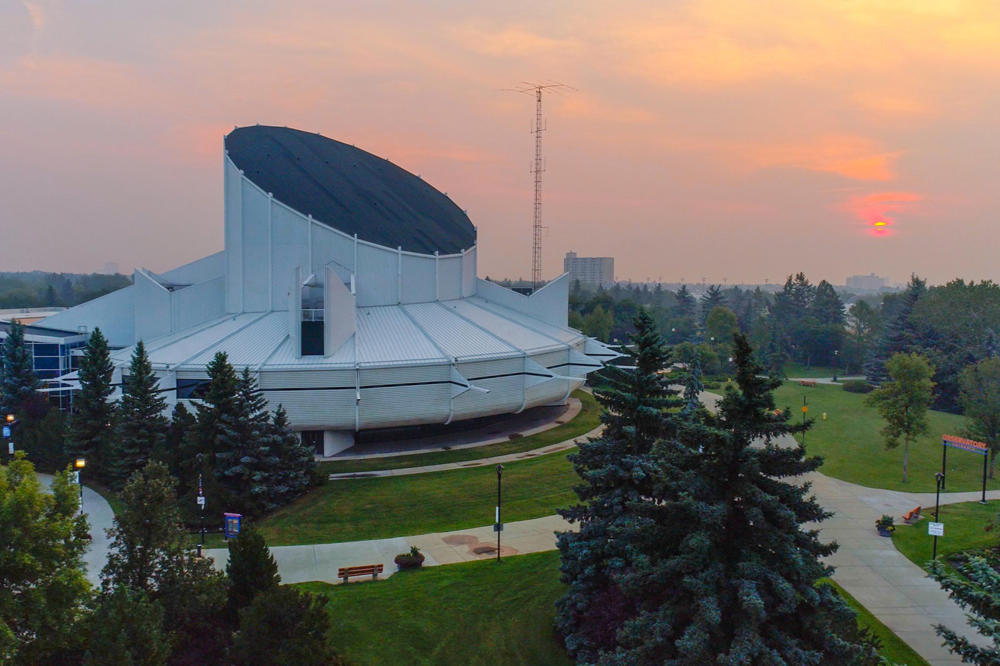

SALA
SCHOOL OF ARCHITECTURE + LANDSCAPE ARCHITECTURE

Presented by UBC SALA, ARCHUS, and the AIBC, Sketches of Building will be on display at
the Architecture Center Gallery. Works will focus on a single project for the duration of term to
synthesize relationships between spatial ideas, program, material, and technical systems. This
year the studio focused on the design of a new mixed-use development, restaurant, hotel and
a number of other programmatic elements such as a lap pool and event center.

DCS will be leading a hands-on workshop for students to partake. The workshop will focus on
current research interests regarding high-performance textile-composite structures. Working in
small groups, students will be given a kit of parts and led through a step-by-step tutorial
to produce a structural textile surface reinforced with resin.
Conceived as a speculative atlas –a roadmap to unknown territories– Driverless Urban Futures
presents a series of drawings and text that unpack the potential impacts of AVs on scales
ranging from the metropolis to the street. The work is both grounded in a study of the history of
urban transportation and current trajectories of technological innovation, and informed by an
open-ended attitude of future envisioning and design. Through the drawings and
essays, Driverless Urban Futures invites readers into a debate of how our future infrastructure
could benefit all members of the public and levels of society.

Architect Douglas Cardinal's path in life has seldom been as smooth as the lines on the
buildings he designs. An Anishinaabe raised in Blackfoot territory, Cardinal's curvilinear vision
has produced instantly-recognizable monuments to Indigenous culture in the national capitals
of both Canada and the United States to world acclaim. But even his landmark successes have
not come without controversy. Douglas Cardinal: Architect of the Future, directed by Andrée
Cazabon, offers an intimate portrait of an artist guided by his Anishnaabe culture to uplift
humanity towards hope and social justice.